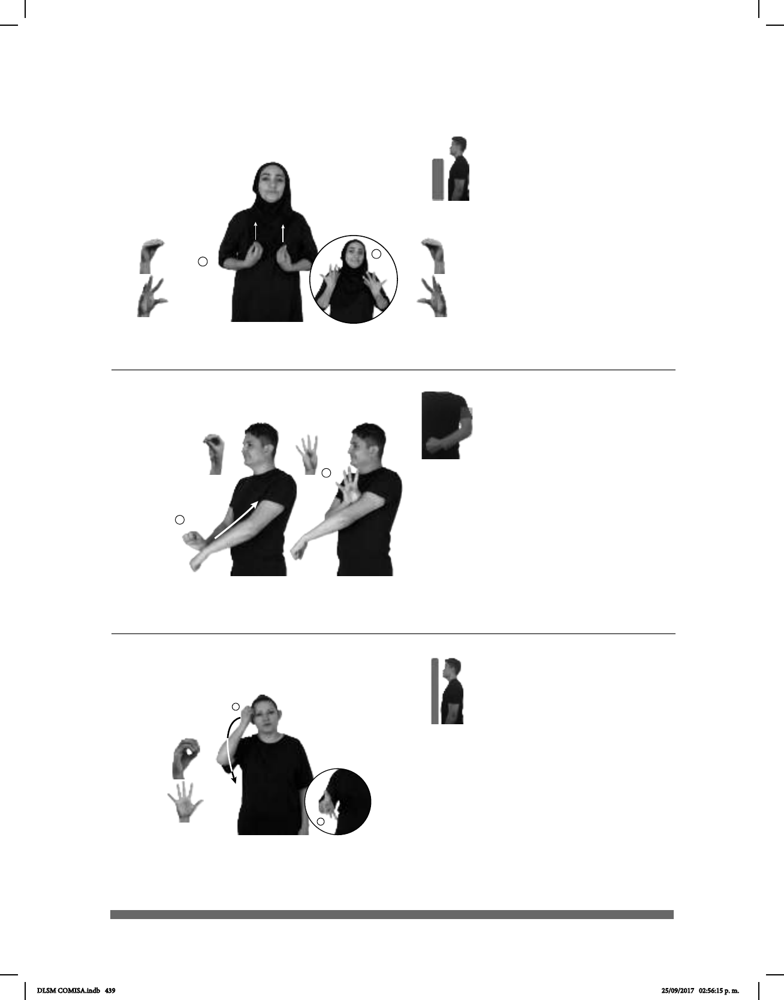

439
1
2
Seña: SM
Seña que pasa de
O.1 a 5.1
La palma inicia hacia
adentro y termina hacia la izquier-
da.
Sobre la sien.
Movimiento: Recto hacia abajo
mientras los dedos se extienden.
1. adj. y sust. m. Que
no trabaja o no le gusta trabajar,
Estado en que se encuentra una
persona cuando le falta ánimo para
hacer algo, no siente deseos de
nada o no quiere trabajar.
(O-36)
dm-PABLO
izquierda
FLOJO
1
2
Seña: SB
MD O.1, MB 4.1
MD y MB palmas hacia abajo.
A la altura de la cintura. MD
sobre MB, de la muñeca al hombro.
Movimiento: Cada uno de los dedos se
mueve alternadamente.
Acción de sonreír
suavemente.
Simula la sensación de
erizar la piel.
1.adj. Que se encuentra bajo los
efectos de una emoción. 2. v. tr. Producir
emoción.
pro-YO EMOCIONADO NUEVO INGRESAR TRABAJO
Estoy emocionado por ingresar a mi nuevo trabajo.
(O-35) Emocionado, -a / Emocionar
(O-34) / Emocionar
Seña: SS
Seña que pasa de O.5
a 5.4
Palmas hacia adentro.
Del pecho a los hombros.
Movimiento: Recto mientras los dedos
se extienden.
Cabeza
ladeada, boca abierta mostrando los
dientes, hombros encogidos.
Simula la sensación
de erizar la piel.
1. sust. f. Sentimiento
intenso, particularmente de alegría o de
expectación que domina el estado de
ánimo de una persona. 2. v. tr. o prnl.
Producir emoción.
pro-YO VIAJE FRANCIA pro-YO EMOCIONAR YA
Mi viaje a Francia me emocionó.
DLSM COMISA.indb 439 25/09/2017 02:56:15 p. m.